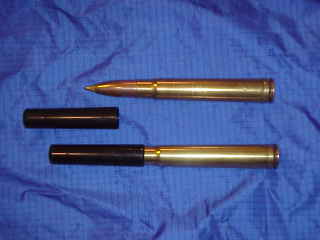
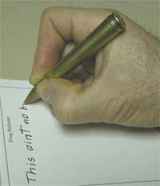
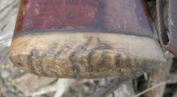
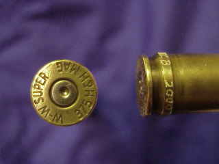
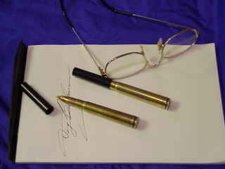
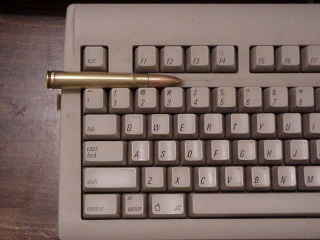
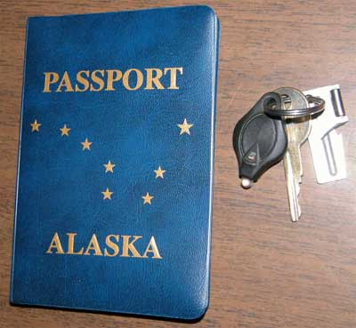
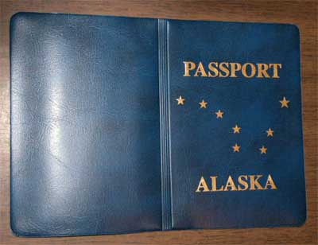
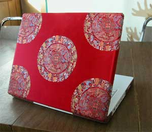

2005,
2009
2005,
2009AlaskaStories.com
Stuff you cannot live without
For your high caliber writing...
The .375 H&H Magnum Pen


Okay, okay, I will offer these things, but they are an amusing exercise in patience to make. I suggest that you make your own, but if you don't shoot a .375 H&H, I guess I can make one for you.
It will cost you 50 bucks, the bottom half of a hundred, and that is for just one. But it should last a lifetime if you stick in a refill on occasion and don't try to shoot the thing.
One thing is a proven certainty, dang near every time I use it...
When you write with your .375 H&H Magnum Pen, people will notice. They will favorably comment on your pen.
You need only say: For my high caliber writing.
There is no writing pen that is a more obvious, high caliber status symbol.
Here's the scoop...
These .375 H&H Magnum pens are made, if you can imagine this, from a .375 caliber Holland and Holland Magnum rifle cartridge that was shot in Alaska, by me. The .375 H&H Mag is a somewhat large caliber rifle that is well known for kicking the urine out of your shoulder. One does not shoot more than a few rounds before deciding to not shoot as many next time. They kick more than most larger calibers. They just plain hurt. They may not hurt some great big muscular tough guy, but I aint that big of a tough guy.

Not to miss a story when I can make one, I made a butt plate for my Rugar No. 1 .375 H&H single shot, from the horn of a full curl Alaska Range Dall Sheep ram, original surface exposed. It hurts. That ram is still getting even with me, one shot at a time.The caliber is known for its long range accuracy. It is more accurate than I am. It is a bit large for Alaska game such as moose, bison and grizzly, but about the right size for the stories. It is a smaller caliber for the larger African game animals, but nobody wasting his time writing stuff like this can afford to get to Africa to hunt there anyway. And judging from the ongoing wars in Africa, people are the primary game animals there, wily sorts that they are.
Among the rifle calibers, the .375 H&H Magnum is the ideal size for a pen. And these things are the real thing, as described. They aint no mass produced commercial product meant for yuppies what can't do nothing for themselves. If you want your money's worth from this pen, you must pay attention to how to refill it.
Just the thought of making pens from more than a half dozen shells at a time hurts my shoulder. To make them, after foolishly shooting too many rounds to see if I can hit anything, I buy some 300 grain, soft nose, boat tail bullets, drill a hole through the copper base, and melt out the lead. Then I clean the bullet tip hole so the pen tip will fit well. Then I buy a box of common Bic medium black ink pens, pull out the plastic innards, cut them to the correct length, and fit them into the bullets. Then I glue the bullets into the shell with contact cement. Remember that, contact cement, not epoxy, super glue or anything that is more permanent than you prefer. Then I gotta polish the things with brasso, of course.
To refill them, you need to put a drop of acetone, gasoline or some such solvent where the bullet meets the brass, maybe with a cotton swab, to soften the contact cement inside. Wait a couple minutes. Do it again if you must. Then put a rubber band around the bullet to get a grip on it, and twist it out. If you don't know the rubber band trick, it also works for unscrewing tight jar lids. Cut another common Bic medium pen innard, with the same type tip, yellow or black, to the same length as the old one, smear some contact cement around the bullet base, insert the bullet into the shell, wipe off the excess glue, then let it sit for a couple days so the glue hardens enough inside where the curing process is slow because there is not much air in there.
If you make some of these pens yourself, you next go to an office supply store, and try pen caps until you find one that fits. Then you write the pen company and try to explain why you need only a few of their pen caps, when they normally sell the whole pens in lots of 10,000. Good story telling practice. Or just buy a pen and use the cap.
Back before the poor sad victims of US government employment, who are usually found huddled inside military and police guarded fortresses, void of intellectual ability, and who cannot distinguish a moose from a mouse, discovered the word, terrorist, as their current excuse to maliciously terrorize everyone, a person could take these pens on airplanes without anything other than the common comment, "cool pen". Now you can be arrested for being within 25,000 meters of any airport, airplane, school yard, government building or telephone while in possession of a dictionary inherently containing the word, "weapon", as defined, and therefore subject to arrest for possession of a weapon. The pen being mightier than the sword, prison is a definite risk for possessing a ball point pen like these. So if you fly with one of these pens, put it in your checked baggage. Government trains its job victims to never question the ever-more-desperate illusions of government bosses, who are the previous job victims with the least intellectual ability who therefore asked the least questions and where therefore promoted sooner. You could write the US Constitution's Bill of Rights with your .375 pen, in front of them, and their mind would therefore perceive your ball point pen as a dangerous weapon. Government dolts are that clueless of the real world outside their government cocoon, which is why it is so easy for any thinking person to hijack any airplane if they want to. Government sorts know only superficial illusions they are taught to never question. If your book looks like a bomb, you will not be reading it on the airplane, but if your bomb looks like a book, you can give extra copies to them and they will let you pass, and they will use the fuse for a bookmark. Back before there were any airline hijackers in the free countries, there were none because the passengers could carry their own guns without anyone being concerned, and therefore no one dared to irritate the pilot or passengers. Then the admirably brilliant DemocanRepublicrat kids in Washington DC figured out that if they disarmed the honest passengers who will comply with idiot laws to humor government sorts, the hijackers would be given a green light, with no competition. Despite the astonishing simplicity of their jobs, government folks stay up late at night figuring out decisions like that. It all starts when you actually believe that you can make the other guy's decisions for him, with only a common human brain, without the other guy's knowledge base, while making your own mistakes just like everyone else, even though you have your entire knowledge base, then use a government title to evade any responsibility for the consistent errors of making another adult's decisions for him. Do whatever you have to do to prevent your children from becoming as stupid as government dolts, even if you have to buy them a .375 H&H pen to encourage their high caliber writing.
Mere plebeians call these things, Bullet Pens. The more riflery astute scholars recognize that the cartridge of a gun is comprised of the cartridge, that is everything hereafter described in this run-on sentence, the bullet, that is the pointy thing that goes ripping down the barrel if you fiddle too much with the trigger, the shell or brass, that is the long skinny brass cup that holds the gunpowder, the powder, that is the magic black stuff that can dazzle the crowd if you throw it on the campfire, and the primer, that is the little thing at the center of the base of the shell that you don't want to dent outside the rifle because it has a dab of pressure-sensitive explosive in it. Primers require a serious whack at a small point to dent them, which is why ammunition can be so casually handled. The primer in your pen will have already been fired. So if you call your .375 H&H Magnum pen, a bullet pen, okay. After spending fifty bucks, you can call it anything you want.
These pens are initialed and dated by the artist hisself, engraved on the magnum belt (raised portion) at the base of the shell. That way you can say your pen is an original made by that (then say whatever you wish), to amuse your friends and worry your political opponents, depending upon your rhetorical skills and what you write with your pen.
If these pens get too popular, I'm going to cover that Dall Sheep horn butt plate with some foam rubber or something, or just delete this page. Do not tell anyone where you got the thing, so you are the only one on the block what writes high caliber stuff, and so I don't have to batter my shoulder too often.
Oh, yeah, ah, so send 50 bucks in US dollars or at least that value in gold, silver, mpingo wood, fine silk, rice, sausage, hot peppers or such stuff of value, preferably legal, and I will mail you a .375 H&H Magnum pen. If you live in some different country where more postal guys rightfully want a bit more for their part of the effort, throw in a couple extra smackeroos or something. If you send a check, make it out to Doug Buchanan or Alaska Intech. You will be making a donation to a worthy cause, and I will send a pen to people who donate to that worthy cause.
No guarantees on the mailing of these simple ball point pens anymore, what with the postal service now blowing up anything that don't look right to the federal Homeland Security Gestapo who still cannot distinguish between mice and moose. But for your 50 bucks, I will make a serious effort to get it past the Gestapo, to you. The Postal Service usually does not notice what they are. Or I can send it by one of the private carriers, such as FedEx or UPS, because they are not trained to fear the power of the pen, for the higher cost of their better service.
Prompt service is not part of this deal. I may be in the mountains when your request arrives, or I might be writing dribble like this on the screen. I'll get to it after I see if there is anything in the refrigerator to eat.
Know this, that which news journalists know least, the pen is mightier than the sword, and is sometimes used to write questions, which lead to knowledge. Knowledge is the death of power, including that of the news media, which is why all government chaps and news journalists fear and loathe questions, knowledge and pens.
Pen your pen request to:
Doug Buchanan
1957 Weston Drive
Fairbanks, Alaska 99709



Females, I had to be told this. Classic case: A beautiful young woman applied for a job in a male-dominated institution, and was treated the way dominant males foolishly treat women, until she pulled out her pen to fill out a form.
Just check the internet for some basic information on a .375 H&H (Holland and Holland) rifle cartridge, learn it, then buy one of these pens, practice a couple sentences of your choice about your preference for the caliber, then use the pen to fill out employment application forms. You will be instantly noticed. It could be the wisest employment and promotion investment you ever made.
And you males, if you do not already have one, it will be too late, and she will know it.
The horse wrangler who told me that, could already out-ride and out-shoot the males at her new job, and that is why she had the pen.
Do not worry about anyone else around you having one of the pens. They will not spend 50 bucks on a pen, because they do not sufficiently understand that the pen is mightier than the sword.
Questions: Doug at Buchanan.ws. (replace at with @)
Alaska Passport

Would you rather carry a US Passport, or an Alaska Passport? The choice is yours.
These passport covers are for sale.
On the airplane or traveling anywhere in the world, your Alaska Passport will make you friends. Alaska has a great image.
In contrast, you might wisely keep your US passport out of sight, for the reason your Washington DC government thugs created around the world. How do common humans react to governments that internationally rule by military might and threats, bombing villages and dismissing the repeated slaughters they call collateral damage? Well? What would you think of the Mexicans if they ruled the world like the US military rules it?
That is the big dipper and north star on the passport, just like on the Alaska National flag. North to the future, and all that. Of course the Juneau politicians consider the big dipper to represent their taxation tool.
Back in the early nineties Joe Vogler discovered the set of laws that the Washington DC RepublicratDemocans intentionally violated and tried to hide, that guaranteed Alaskans the right to vote for independence. The feds hid the laws, and forced Alaska into statehood in the United States. They used a classically rigged vote, loaded with more military voters than Alaska had citizens. The ballot, printed with the so-called choice of only statehood, was required by law to have the option of independence. The feds violate all laws, with impunity. The Washington DC's military was not lawfully allowed to vote, and violated the law as usual, on command. The discovery of those covered-up records and laws caused the more thinking Alaskans to discuss the profound advantages of Alaska independence.
Well, so, no population contains a very high percentage of thinking people, less than one percent, or all the damaging contradictions created by the DemocanRepublicrats and their unquestioning minions, could not exist. Every nation's problems are created only by the people's own government, themselves, while unquestioning citizens are easily fooled into blaming everyone and everything else in the world. If the other guy causes your problems, then by definition you are admitting that he is more intelligent than you, because you cannot figure out how to solve those problems which he is smart enough to create for you, and thus you would wisely do what that more intelligent person tells you to do, and not complain. I do not complain about the government. I rag the pitiable dolts, for amusement, and leave them to their otherwise easily corrected game.
When all those American flag-waving conservative military-supporting sorts, as I once foolishly was, belatedly figure out that they were duped by waving flags in the identical fashion as the flag-waving German Nazi military recruits were duped by self-serving dolts in the Central Command, they will never escape their embarrassment among commonly intelligent people.
Did you want Americans to wave the flag, or the US Constitution? Well?
Notice that all the government-supporting sorts refuse to answer that question, much to your amusement. If over 20,000 gun laws infringe the right to possess and carry guns, as is the case, written only by the US RepublicratDemocans, violating the Constitutional Law that states that the right to keep and bear arms shall not be infringed, who has successfully destroyed the constitution? Well? If the government seizure of the ownership of your body, to thus be able to dictate what smoke you may or may not put into your own body, obviously violates the most fundamental human right protected by the Ninth Amendment, who has successfully destroyed the United States Constitution? Well? Was it the communists, Nazis, Castro, Taliban, Al Queda, Iraqis, Afghans, Chinese, Koreans or Vietnamese? Or was it the Washington DC RepublicratDemocans whom American idiots keep electing?
If you are too cowardly or too ignorant to answer that question, as are DemocanRepublicrats, you should wave the American flag that represents the US DemocanRepublicrat Regime and the ignorant cowards supporing them.
If you want to prove the total failure of the American public schools and thus their useless teachers, ascertain the paltry percentage of Americans who can correctly answer the foregoing question. The Nazi German citizens genuinely believed that Hitler was the solution, not the problem, just like Americans believe that the DemocanRepublicrats are the solution, not the problem, much to your robust laughter.
So a certain few Alaskans discovered the laughable ease of promptly making Alaska an independent nation, which would universally benefit the lower 48 folks, Alaskans, and the rest of the world. But therefore those certain few chaps have not stopped laughing over how easily unquestioning people are fooled by the simpleton lies of Washington DC RepublicratDemocans. There is just no way that mere humans can improve upon the entertaining game called, humans, so those certain few sorts became spectators, still laughing themselves to tears watching Alaskans create all their problems simply because they, especially the Alaska news journalists, are too cowardly and too stupid to ask certain questions of our gracious and benevolent friends and colleagues in the prestigious US governmental institution.
Well, besides the Alaska Independence Vote t-shirts and copies of the Declaration for an Alaska Independence Vote, that period of time resulted in some left-over Alaska Passport covers, after all the independence supporters got theirs. So they are for sale.

The idea came from seeing the Russia Passport cover that the Russians put over their old Soviet Union Passport.The Alaskans in the independence movement have benefited from Alaska Passport covers, as you might recognize. Now the Alaska Passport covers are available to you, while they last.
These passport covers fit over your United States Passport, like a glove, and protect it. They are a quite similar to, but not the exact texture and color of a US Passport. They have gold-colored lettering. They are a protective cover for your passport. Yes, or course it is legal to put a protective cover over your passport. Most of those gullible Americans cannot comprehend the human ability to do what humans can do without begging for the permission of government bureaucrats for everything humans can do. The cover does not alter or obscure the information inside.
There is a reason that the personnel of the privileged government class within many US agencies are given neutral country passports for international travel, at your tax dollar expense, by those agencies, while you are only allowed a US passport, unless you buy one (expensive) from one of the neutral nations which sell them. It is only when the common people belatedly recognize how extensively they were duped and defrauded by their government, that they will belatedly sack their government.
So now you can cheaply present the image of being an Alaska citizen, rather than a US citizen. The Alaska Passport covers are great conversation starters.
The world thinks highly of Alaska, and will continue to think highly of Alaska until they commonly recognize that Alaska is owned by the United States. Among the common people, Alaska is internationally perceived to be a country of its own, or a province of Canada, or an island pictured in the ocean near Hawaii, a long ways from the United States (not far enough). Alaskans wisely maintain the international image that Alaska is a separate country, much to the amusing anger of the DemocanRepublicrat Americans who insatiably crave absolute military control of the world.
And these covers are priceless ($ 5) collectors items from the first significant independence effort (the t-shirt was made) since the phony statehood vote. Alaska cannot possibly escape becoming an independent nation, dumping the control by the malicious and incompetent Washington DC thugs. The timing is immaterial to those who are laughing at the ongoing show. So the collector items from the first Alaska independence movement are certain to be selected for the Antique Road Show in another hundred years or so. Big bucks. Big bucks.
The lettering and stars on the genuine plastic cover are of gold gilding, so if you carry your passport in your jeans hip pocket every day, the lettering will eventually wear off, but otherwise it is as durable as all those gold gilded plastic things. I still use my original one, and I have been all the way to Alaska.
If you are an Alaskan, you really want one of these hummers, maybe two. And there are not many boxes of them left.
If you are not Alaskan, but you can tell a few Alaska stories, you might consider the value of having an Alaska Passport to support your wise claim to be an Alaskan. Perhaps practice a few Alaska stories from this website. Or just say you live in Anchorage. Most of the people in that sprawling megalopolis do not know they live in Alaska, so your story need not be accurate. Or say you live in Valdez, and ramble on about frozen waterfall ice climbing. Perhaps mention that you live in Fairbanks, and bad-mouth the government mercilessly. If you choose Juneau, the State capital, just blabber on about the need for more taxes for more government. Carry a few affordably small gold nuggets so folks will believe your story about being from Nome, or Wiseman, Chicken, or Manly, Central or damn near anywhere in Alaska. In fact hand the guy a gold nugget, and even the Al Queda suicide airplane hijacker will believe you are from Alaska, and you will not be needing the nugget anymore anyway.
So the Alaska Passport covers are 5 bucks each, for two or more only (ergo: $10 minimum order), count them, an even 5 green paper dollar bills each, not 4.99.95, payable in federal reserve note script, or any other negotiable format the bank or I might accept, including gold nuggets, a bottle of comparable Cabernet Sauvignon at least 5 years old, silk, spices, or such good and valuable goods. I pay the postage in the US and Alaska. Send it to the address up there by the 375 pens.
I cannot tell you where to get the Fairbanks Port of Entry passport stamp. It irritates the feds. Those pitiable dolts would follow Hitler or Saddam into their last bunkers if they were waving a US flag and said that the bunkers were a government safety program. They will die of old age before they figure out how to ask a question revealing the contradictions of their government actions. If it is too unsafe for US government personnel to travel with a US passport, precisely who caused such hatred of the US, precisely how, and should not all Americans therefore be given neutral country passports? If your neighbor gets a government job, because he is too lazy to get a useful job, is his life therefore worth more than yours so you must pay taxes to protect his life more than you are allowed to protect yours? Was my life worth more when I was a government dolt, and worth less now that I am only a common citizen? Do not let your children ever get government jobs, or they will not soon enough question their way back out of that error, and their mind will end up as useless for resolving contradictions, as are the minds of the victims of career government employment.
Remember, beside possibly saving your life by disassociating you from the George Bush Regime, it is a collector's item. Worth a fortune at the Antique Road Show in another hundred years.
If your laptop does not look like these, your laptop is boring.
2005,
2009

Get some fabric of your choice. Very carefully and tediously tape over everything on your computer except the surfaces you want the cloth to cover. Everything. Check the tape again. First practice the following process. Then spray the computer top with spray-on adhesive, not too much, and wipe off any excess drops if they happen. Lightly spray the fabric. Lay the fabric on the computer. Do the same with similar embroidered fabric ribbon around the edge. Then practice a good line of rhetoric for all the times people comment on your laptop.
Oh, if you screw it up, blame it on the adhesive, the fabric, the tape, or the government.
The computer manufacturers, like all institutionally trained minds, are the last to figure it out. They have scoffed at my elegant-looking, covered laptops for the last few years. But they will eventually make computers that are not boring.
Now, wisely get back to doing something more worthwhile, while I fumble with whatever is next on the list.
Stories 1
Stories 2
Stories 3
Stories 4
Stories 5
Stories 6
Stories 7
Stories 8
Stories 9
Stories 10
Stories 11
Stories 12
Stories 13
Stories 14
Places
Concepts
Smoking
Smoke Photos
Smoke Others
Links
Home